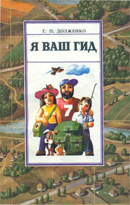

Я ваш гид [туристско - краеведческая книга о Ростовской области]. Ростов н/Д: Кн. изд-во, 1991. - 160 с.

Аннотация
О том, как лучше организовать семейный туристский поход, о природных особенностях донского края, о музеях Ростовской области, о том, как оказать доврачебную медицинскую помощь и провести массаж в походе, изготовить простое и дешевое туристское снаряжение, вы узнаете из этой книги. Кроме того, в ней содержатся сведения об организациях, обслуживающих туристов в Ростове и области, а также впервые помещены подробные карты-схемы Среднего и Нижнего Дона. Адресуется краеведам, экскурсоводам, любителям путешествий.